System architecture
Audits, library architecture, foundations, tokens, theming, component models, cross-platform systems.
Design System Designer
I turn fragmented interfaces, libraries, and workflows into coherent design systems that teams can understand, maintain, and scale.
Case studies showing how I audit fragmented products, define system foundations,
and turn recurring interface problems into scalable cross-platform solutions.
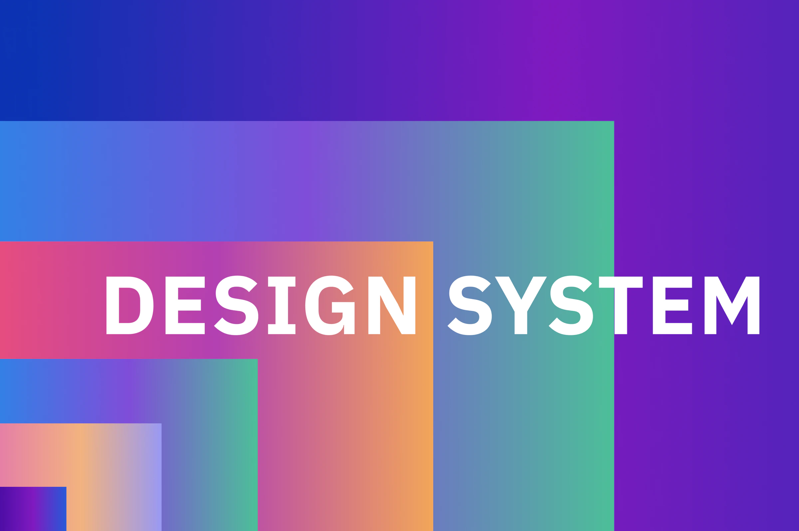
Moved six products from separately maintained libraries to one shared architecture with product-level adaptation.
DESIGN SYSTEM · WEB · APP · ARCHITECTURE · GOVERNANCE
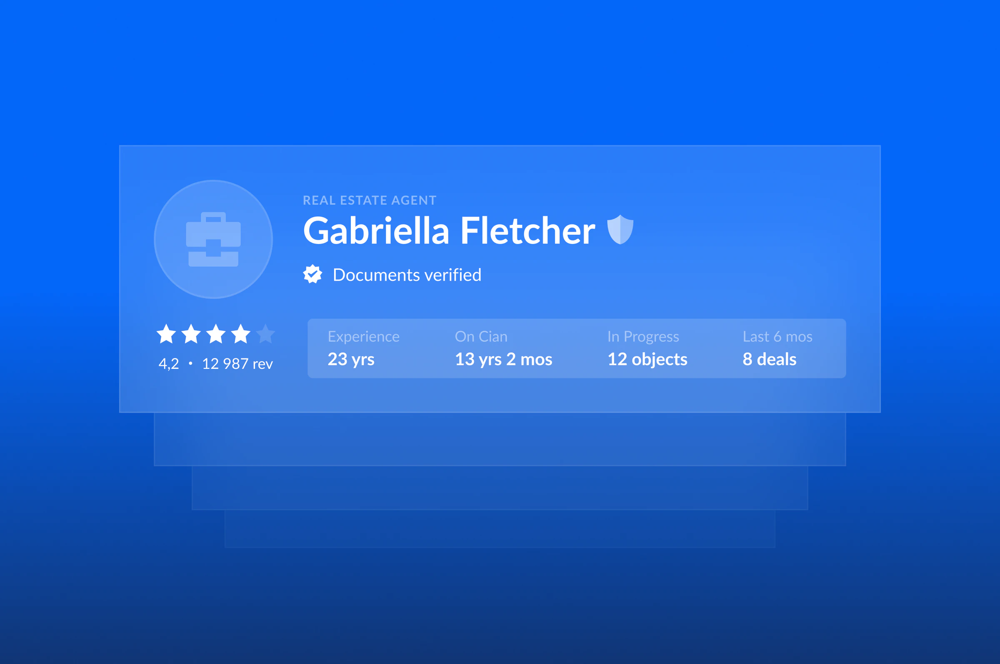
Led a cross-team initiative that turned fragmented contact patterns into a shared component model.
COMPONENTS · WEB · RESPONSIVE · GOVERNANCE · CONTACT FLOWS
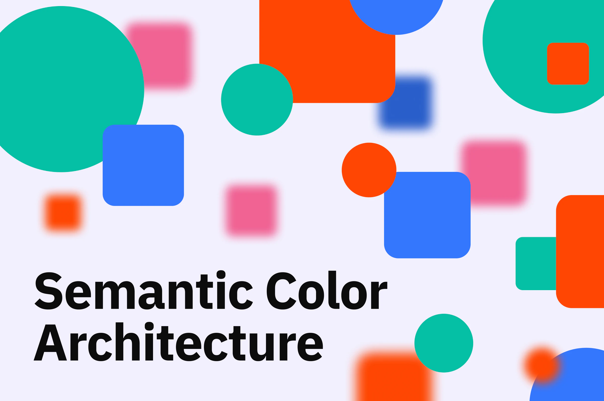
Designed one semantic color structure for six product systems across Web and App.
COLOR SYSTEM · WEB · APP · SEMANTICS · THEMING
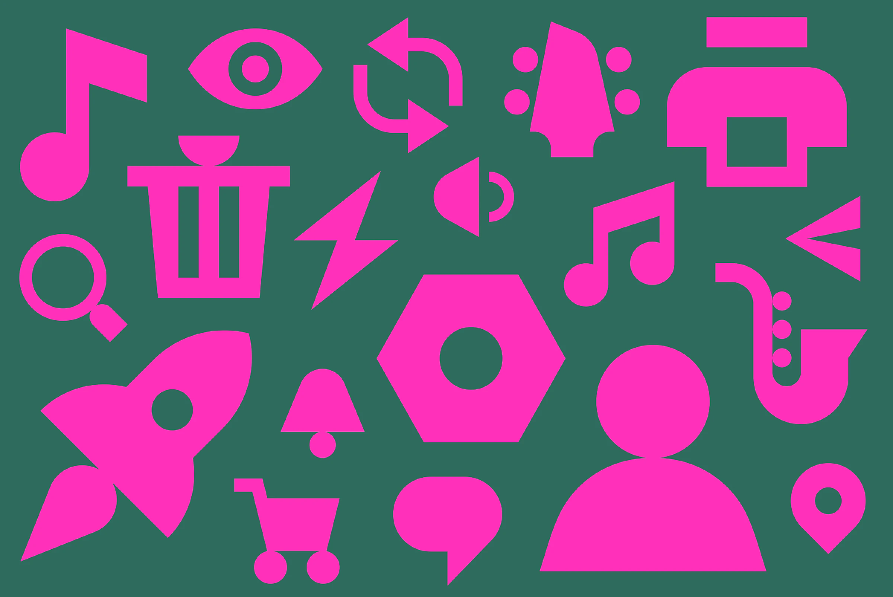
Consolidated 1,136 assets from five libraries into one shared icon system used by seven products.
ICON SYSTEM · WEB · APP · OPTIMIZATION · GOVERNANCE
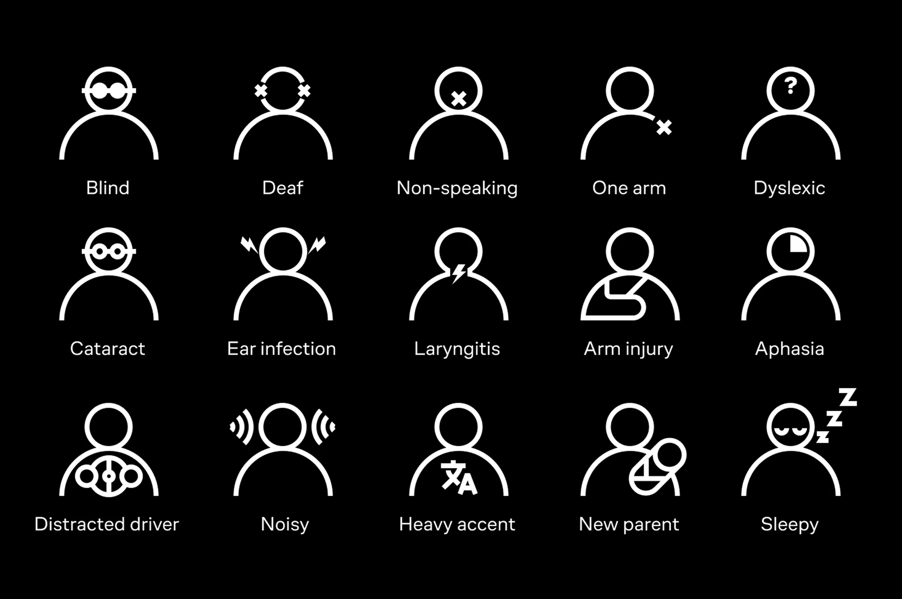
Turned accessibility research into a repeatable framework for audits, ownership, system foundations, and testing.
ACCESSIBILITY · AUDIT · WCAG · GOVERNANCE · VOICEOVER
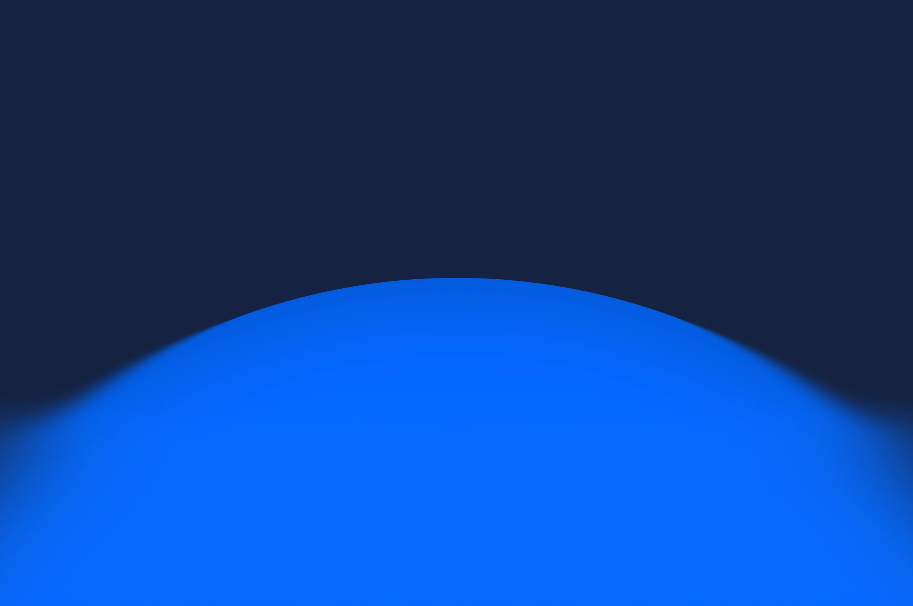
Unified three platform-specific color libraries into one semantic system with reusable tokens.
FOUNDATIONS · WEB · IOS · ANDROID · THEMING
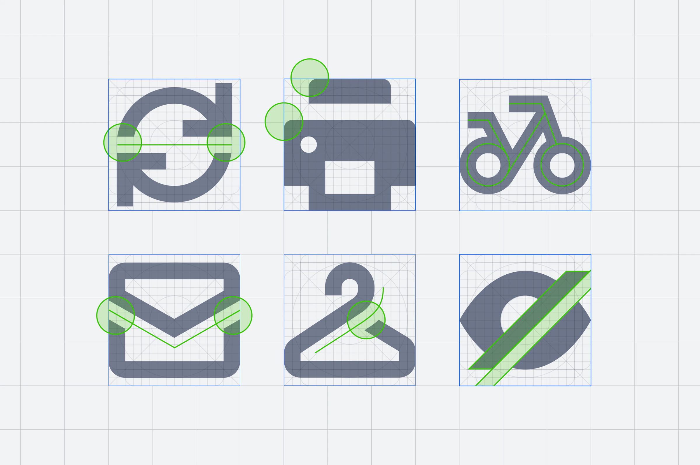
Consolidated three platform libraries into one shared system of rebuilt and documented assets.
ICON SYSTEM · WEB · IOS · ANDROID · OPTIMIZATION
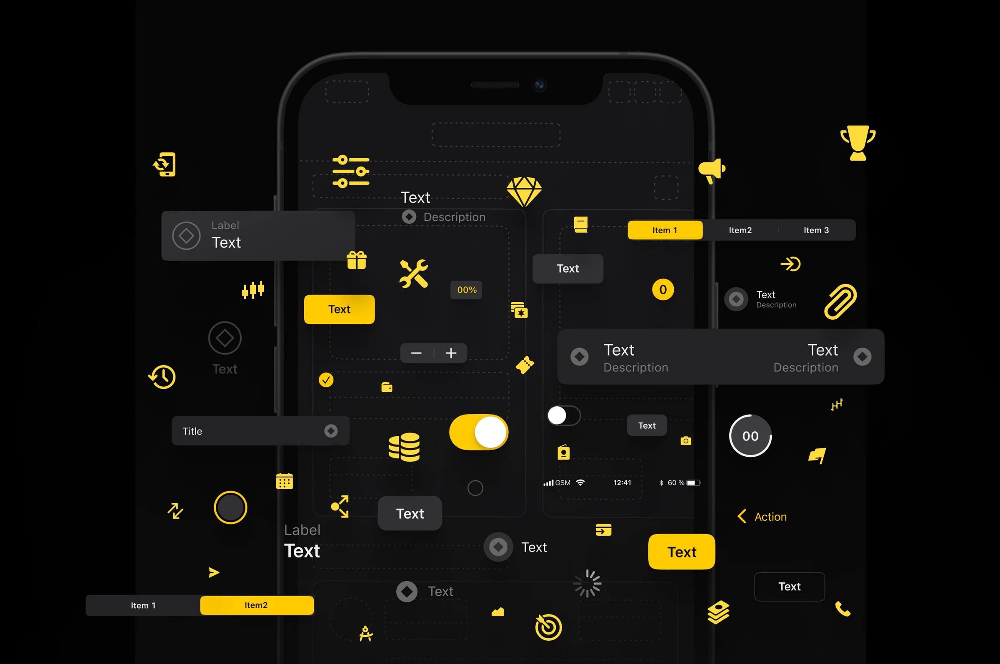
Rebuilt the design infrastructure for a multilingual mobile trading product.
PRODUCT DESIGN · DESIGN SYSTEM · IOS · ANDROID · LOCALIZATION
Before specializing in design systems, I designed mobile, tablet,
and enterprise products across B2C and B2B environments.
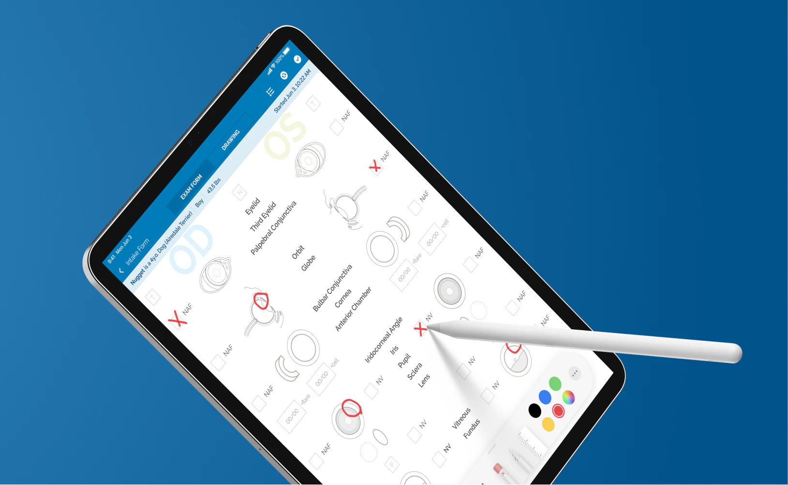
B2B · IPADOS · UX · UI · DESIGN SYSTEM
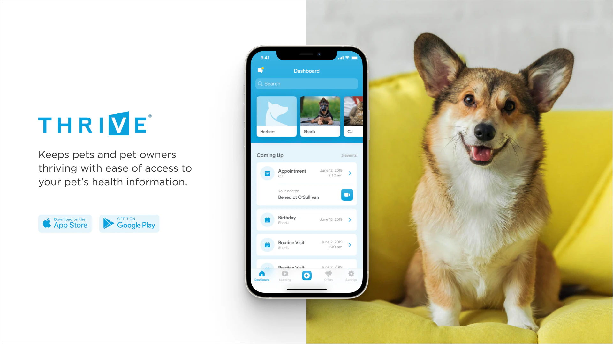
B2C · IOS · UX · PROTOTYPING · DESIGN SYSTEM
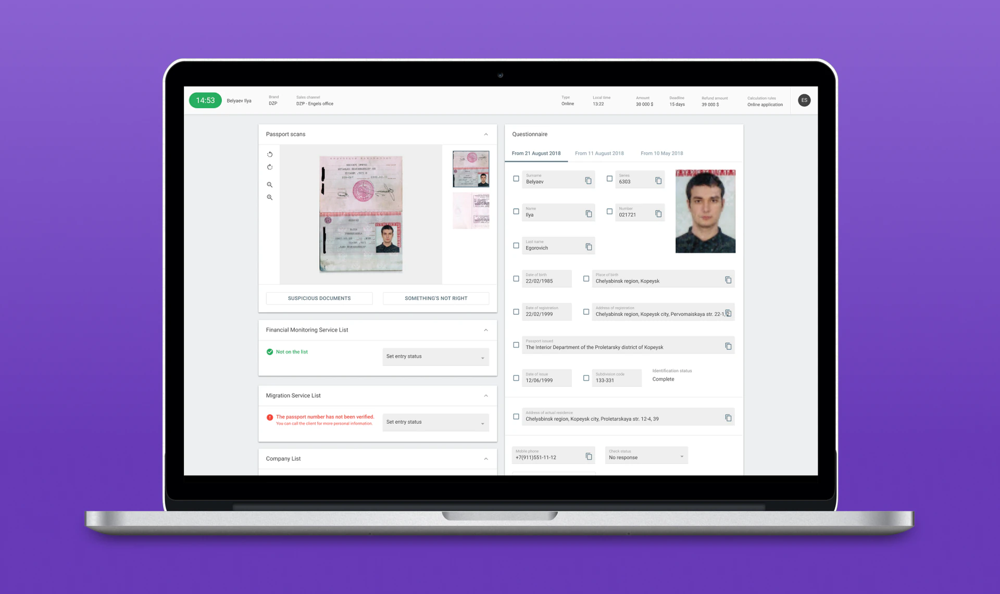
B2B · WEB · RESEARCH · PROTOTYPING · WORKFLOW
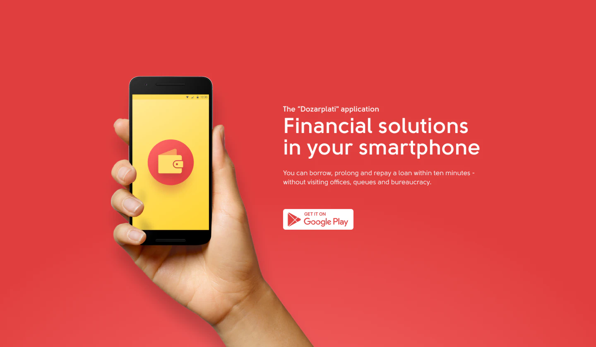
B2C · ANDROID · UX · UI · REDESIGN
Audits, library architecture, foundations, tokens, theming, component models, cross-platform systems.
Guidelines, documentation, contribution workflows, accessibility, and design–engineering alignment.
B2B and B2C workflows, interface design, prototyping, iconography, and visual systems.
Design System Designer
Design system foundations, shared libraries, and automation across six products, including web, mobile, and themed ecosystems.
2022—Present
Design System Designer
Built a shared design-system foundation across Web, iOS, and Android from fragmented product libraries.
2021—2022
Senior Product Designer
Owned product design and the design ecosystem for a multilingual iOS and Android trading product with 10M+ downloads.
2019—2021
Senior Product Designer
Designed fintech web and mobile products, built internal design systems, and mentored junior designers.
2017–2019
Graphic design · web · agency / independent work
Group M · independent and agency work.
2006–2017
“Thanks to Vitalii the system has a clear structure and rules, the elements have found their description. I want to note Vitalii's thoughtfulness and structural and flexible thinking.”
“He was the initiator and creator of the UIKit component library, which the team continued to use even after he left the company. The quality of his solutions is always excellent, moreover, he constantly offers new ideas for improvement.”
“Vitalii is very careful with design structure, intelligently breaks design into components and does not do ‘feature for feature's sake’: everything is always justified and conditioned by some problem solved for the client.”
I hired Vitalii at Cian as a System and Principles Designer. Before that, the tasks for the system were distributed among the team. Vitalii was able to take it all on, as well as set up communication with the developers of the system. Thanks to Vitalii the system has a clear structure and rules, the elements have found their description. I want to note Vitalii's thoughtfulness and structural and flexible thinking. He managed to balance between strict adherence to the rules of the system and the exceptions that sometimes had to be made.
Vitalii worked in the mobile development team, which I led. He has established himself as a strong specialist. He was engaged in the design of mobile applications (iOS and Android). I admire his attention to subtle details and the desire to constantly improve. He was the initiator and creator of the UIKit component library, which the team continued to use even after he left the company. It is always easy to discuss the details of the implementation with Vitalii and he takes feedback constructively. The quality of his solutions is always excellent, moreover, he constantly offers new ideas for improvement. Vitalii easily finds a common language with all team members, which allows him to find efficient and high-quality solutions. I’ll be glad to work with him again.
I worked with Vitalii, while he was a UX/UI designer, as an iOS developer for a little over a year. Vitalii is very careful with design structure, intelligently breaks design into components and does not do “feature for feature's sake”: everything is always justified and conditioned by some problem solved for the client. Vitalii is maximally loyal to the project, the product and the company as a whole, which is always reflected in his statements and actions. Extremely recommend him as a great designer and employee and I really hope to work shoulder to shoulder again someday.
Ok, speaking about Vitalii, he smart, brave and intelligent. One of best designers ever i met. Sad that we not working together right now and always open to any cooperation with. You will be very lucky if you hire he.